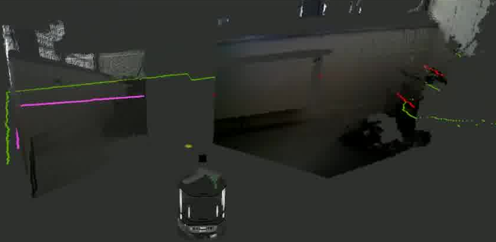
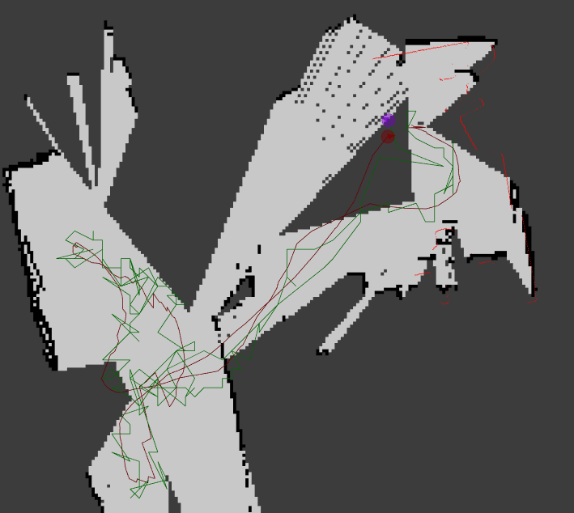
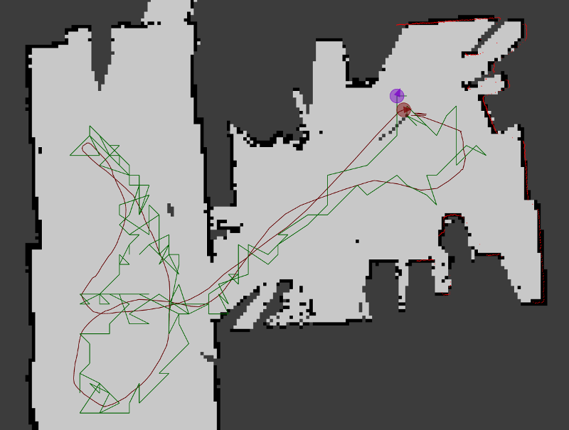
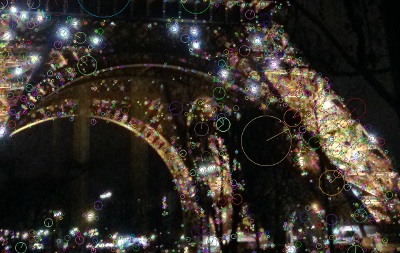

Première Partie : Approche & Algorithmie¶
Pour permettre au robot de se relocaliser, nous utilisons une approche composée de quatres phases :
- La première phase doit permettre d’utiliser le robot afin de capturer les informations nécessaires à l’apprentissage.
- La seconde phase consiste, à partir de lasers et des informations odométriques du robot, à créer une carte de l’environnement (carte métrique).
- La troisième phase, où il s’agira d’utiliser à nouveau les informations obtenues en amont, en associant des caractéristiques visuelles à une grille discrétisée représentant la carte métrique.
- La quatrième et dernière phase est la relocalisation visuelle. Elle est composée de deux modules : un premier, se basant sur les laser, tente de se positionner sur la carte en faisant correspondre laser et carte métrique; le second évalue la position du robot en prenant en compte les caractéristiques visuelles provenant des caméras RGB-D (relocalisation en cas de perte ou lors de l’initialisation).
Nous allons maintenant détailler chacune des ces phases.
Collecte d’informations¶
Pour réaliser la carte et l’apprentissage, nous avons besoin des données suivantes, provenant du robot :
- Un laser télémétrique (simulé par les caméras RGB-D);
- L’odométrie (fournie par le Turtlebot);
- Des images RGB (fournies par les caméras RGB-D);
- Des informations concernant les positions des différents équipements du robot (fournies par les transformations de ROS TF).
Simulation d’un laser télémétrique¶
{kind=link}
Certains des modules de ROS que nous utilisons fonctionnent eux-même avec un télémètre laser. Nous avons choisi de les utiliser tels quels et de leur fournir un laser simulé en entrée.
Ce laser simulé est créer à partir des deux caméras RGB-D. Le principe consiste a utiliser le nuage de points des caméras RGB-D, comme illustré sur l’impression écran. A partir du nuage de points, nous extrayons autour de la ligne d’horizon un certaines nombre de lignes. C’est en se basant sur ces lignes que nous construisont un message de type sensor_msgs/LaserScan pour chacune des caméras.
Ensuite, afin d’obtenir une information de laser unique, il est nécessaire de joindre les deux messages en un seul.
Dans le but d’améliorer les qualités des cartes ainsi obtenues, nous appliquons un dernier filtre, permettant d’amoindrir les déformations des caméras RGB-D.
Warning
Qualité des cartes métriques
Pour que le logiciel Kinav fonctionne correctement, il est nécessaire d’obtenir des cartes de relativement bonne qualité. Dans ce but, il est chaudement recommandé d’avoir un calibrage de positionement dse caméras par rapport à la base du robot extrêmement précis.
Odométrie¶
L’odométrie est nécessaire à la création de la carte métrique à partir du module ROS GMapping. Elle est également utilisée lors de la phase de relocalisation, puisque qu’il s’agit de la donnée d’entrée du module AMCL. Cette dernière est utilisée afin d’essayer d’estimer la position du robot sur la carte.
RGB et informations caméra¶
L’image RGB est utilisée pour extraire des caractéristiques visuelles. Nous utilisons OpenCV pour extraire ces informations. Nous ajoutons à ces informations l’angle du mot dans l’image, à partir de la position de chacune des caractéristiques visuelles. Ce traitement est employé lors de la phase d’exploration et de cartographie, mais également lors de la phase de relocalisation.
Création de la carte métrique¶
 {kind=link}
{kind=link}
Dans ce projet les cartes métriques sont créées à l’aide du module GMapping. Ce module a besoin d’un laser télémétrique et d’odométrie pour générer la carte d’occupation. Comme notre laser est beaucoup moins précis qu’un laser télémétrique classique, nous compensons cette lacune en favorisant les données odométriques.
A gauche, la carte métrique a été générée à partir d’un laser généré grâce aux deux caméras RGB-D et à droite, en utilisant un réel laser télémétrique.
On peut s’apercevoir qu’il est important, lors de la création de la carte, de parcourir exhaustivement les pièces du lieu à cartographier, afin d’obtenir une carte précise. En effet les angles des caméras RGB-D sont bien inférieurs à ceux d’une caméra télémétrique classique.
Exploration et cartographie¶
L’exploration permet de cartographier l’environnement en créant une carte métrique de type grille d’occupation (module gmapping de ROS). Cette grille sera enrichie des caractéristiques visuelles associées aux positions visitées par le robot, données qui permettront la relocalisation.
Ces caractéristiques visuelles sont des points d’intérêt extraits des images. L’ensemble est stocké de manière compacte, à l’aide d’un dictionnaire de points d’intérêts de références (appelés mots visuels).
{kind=link}
Cette phase collecte des données (images RGB + profondeur) et réalise la carte de l’environnement. A partir du laser simulé, nous créons une carte de l’environnement à l’aide du module GMapping. Nous utilisons ensuite les données de position métrique du robot ainsi obtenues pour enregistrer les informations visuelles. Dans ce but, les positions sont discrétisées selon une grille régulière qui découpe l’environnement en cellule de 0.15 mètre et en 8 orientations. Pour chaque cellule visitée par le robot, nous renseignons un index inversé, qui associe à chaque mot une liste de position associés.
Pour éviter de traiter trop d’informations, nous filtrons les images. Ce filtre est basé sur l’analyse de l’odométrie. Nous récupérons une image à chaque fois que le robot bouge (translation ou rotation). Nous prenons également une image 1s après l’arrêt du robot, afin de garantir l’obtention d’un nombre minimal d’images non floues.
Note
A propos de la discrétisation
Les critères de la discrétisation de la carte métrique sous forme de grille sont paramétrables. Il est donc possible de spécifier une résolution et un nombre d’orientation. Il est toutefois recommandé d’utiliser au moins 4 orientations pour permettre au module AMCL de se repositionner correctement.
Relocalisation¶
Lors du démarrage, d’un kidnaping ou encore lorsque le module AMCL de ROS est perdu, nous passons à la relocalisation par les images.
En fonctionnement normal, la localisation sera assurée par une technique de filtrage particulaire utilisant la carte métrique et l’information de distance de la caméra (module AMCL de ROS). Lors de cette procédure, un indicateur de confiance est calculé sur la position estimée par le module AMCL : nous calculons l’entropie de l’ensemble des échantillons de position calculées. Plus l’entropie est grande et plus il est probable que le module se trompe.Un seuil permet de décider s’il est utile de ré-initialiser le module.
Si le module AMCL fournit une position incertaine, alors nous utilisons la relocalisation visuelle. Celle-ci récupère une image sur chacune des caméras RGB-D, puis extrait les mots de ces images, et enfin calcule un score pour chaque position connues de notre grille. Si : un des scores respecte un certain nombre de critères (voir plus bas) et que les meilleurs scores ne sont pas trop éparpillés, alors nous réinitialisons le module AMCL avec cette position.

Table Of Contents
Previous topic
Bienvenue sur la documentation de kinav
Next topic
Seconde partie : Mise en oeuvre